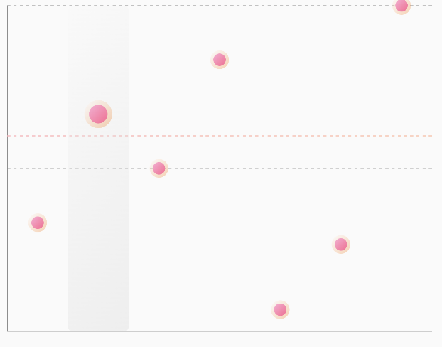

PointChart
| Point Chart Preview |
|---|
 |
🍸Overview
Renders a point chart where each data point is plotted on a 2D axis, useful for visualizing discrete data points without connecting lines.
🧱 Declaration
@Composable
fun PointChart(
data: () -> List<PointData>,
modifier: Modifier = Modifier,
labelConfig: LabelConfig = LabelConfig.default(),
colorConfig: PointChartColorConfig = PointChartColorConfig.default(),
chartConfig: PointChartConfig = PointChartConfig(),
target: Float? = null,
targetConfig: TargetConfig = TargetConfig.default(),
onPointClick: (Int, PointData) -> Unit = { _, _ -> }
)
🔧 Parameters
| Parameter | Type | Description |
|---|---|---|
data |
() -> List<PointData> |
Lambda returning the list of data points to plot. Each PointData contains the position and optional visual settings. |
modifier |
Modifier |
Modifier to control layout, size, and gestures. |
labelConfig |
LabelConfig |
Configuration for axis labels and styling. |
colorConfig |
PointChartColorConfig |
Defines color configuration for points, axes, and grid. |
chartConfig |
PointChartConfig |
Visual and animation configuration for the chart (see below). |
target |
Float? |
Optional target line (e.g. goal threshold) shown on the chart. |
targetConfig |
TargetConfig |
Styling for the optional target line. |
onPointClick |
(Int, PointData) -> Unit |
Callback when a point is tapped. Provides index and data point. |
📊 Data Model
PointData
Each data point in the chart is represented by the PointData class:
data class PointData(
val yValue: Float,
val xValue: Any,
)
⚙️ PointChartConfig
Configuration options for customizing the appearance and animation of a PointChart.
data class PointChartConfig(
val axisLineWidth: Float = 2f,
val gridLineWidth: Float = 1f,
val circleRadius: Float = 10f,
val showClickedBar: Boolean = true,
val animationDurationMillis: Int = 500,
val animationEasing: Easing = LinearEasing,
val animatePoints: Boolean = true,
val gridLinePathEffect: PathEffect = PathEffect.dashPathEffect(floatArrayOf(10f, 10f), 0f),
)
| Parameter | Type | Description |
|---|---|---|
axisLineWidth |
Float |
Width of the X and Y axis lines. |
gridLineWidth |
Float |
Width of the horizontal/vertical grid lines. |
circleRadius |
Float |
Radius of each plotted point on the chart. |
showClickedBar |
Boolean |
Whether to visually highlight the selected/clicked point. |
animationDurationMillis |
Int |
Duration of the entry animation for points. |
animationEasing |
Easing |
The easing function used during animation. |
animatePoints |
Boolean |
If true, points animate when the chart is first drawn. |
gridLinePathEffect |
PathEffect |
The pattern used for drawing grid lines, default is dashed lines. |
💡 Example Usage
PointChart(
data = { data },
target = 18f,
colorConfig = PointChartColorConfig.default(),
chartConfig = PointChartConfig(circleRadius = 20F),
modifier = Modifier.padding(10.dp).fillMaxWidth().height(300.dp),
onPointClick = { index, circleData -> }
)